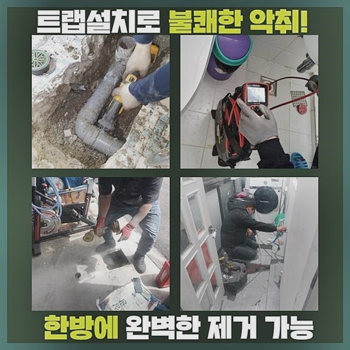
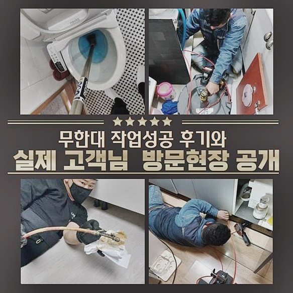
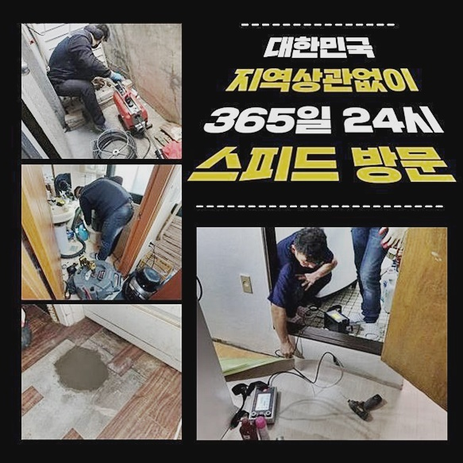
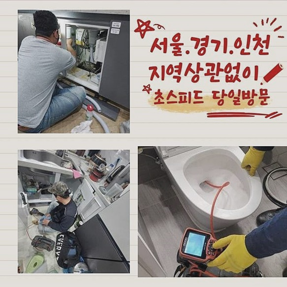
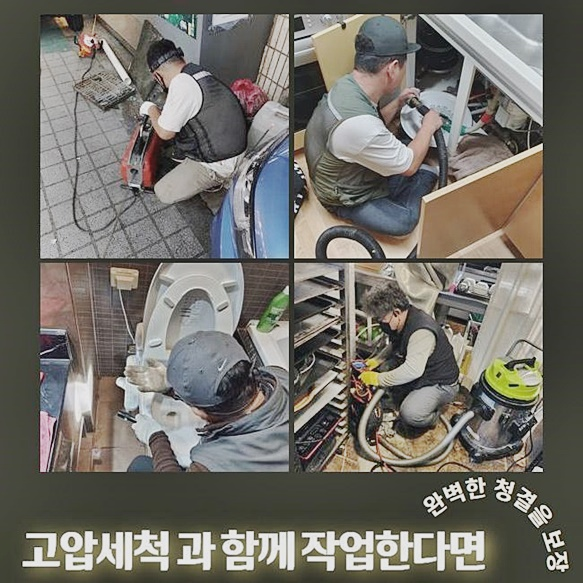

🏠 인천 화수동싱크대배수구역류 창영동 배관뚫기 해결방법
인천 싱크대막힘 전문 시공 후기

📋 작업 개요
- 위치: 인천
- 서비스 유형: 싱크대막힘, 하수구막힘, 배관막힘, 집수정막힘, 역류해결, 뚫는업체, 배관청소, 고압세척
- 작업 일시: 2024. 6. 8. 11:31
- 업체명: 하수구수사대 (010-5615-2118)
🔍 문제 상황
인천 화수동싱크대배수구역류 창영동 배관뚫기 해결방법
하수시스템 오류가 발생된다면 그 피해는 한두가지가 아닌데요
실제예시를 들어 해당 증상과 관련해 일러드리니 알아두시면 도움이 되실거에요
지금부터 안내드릴 현장이라 함은 연립주택 관리사무소에서 의뢰하셨는데요
고객분은 주기성을 가지고 배관관리를 실시했으나 불현듯 구분건물 내 가정에서도 문제가 나타난다 상황설명을 이어가셨습니다
앞서서는 주위에 있는 근방의 배관공에게 맡겼지만알아보니 스프링장치를 제외하고도 장치들이 많은 것을 알았고 이를 온전히 고쳐내는 전문진이 존재하는걸 인지하게 되었고 업체 가운데 저희들에게 전화를 주셨죠
꾸준히 배수관 검수를 실시해도 수도가 배출되지않으면 그 기조는 가정의 배관설비에 있지않고 중앙시설에 있을 가능성도 있는걸 알게되는 문제니 살펴보겠습니다
문제양상을 듣고 준비를 마쳐 달려간 데는 한 다세대 집합건물의였고, 조사끝에 증상의 까닭은 집수 출수구에 자리하고 있었죠

🔎 원인 분석
💡 전문가 진단: 정밀 진단 장비를 사용하여 슬러지의 고착 여부를 판명하고 타격/세척 작업을 실시했습니다.
바깥의 집수정의 입구를 개방시키니 원활하게 배출되지를 못했고 하층엔 청결하지못한 기름이 잔존해있어서 악조건의 모습이었습니다
외부하수구에도 잔해물이 많으면 가지배관들도 안좋을거란 생각하며 내시경장치를 투입한 뒤 원인파악을 이어갔어요
진단 시 운용하고있는 내시경기기는 잔해물로 뒤덮인 하수관을 검토할 수 있게 하는 내시경장치로 유연하고 깨끗한 화면으로 복잡한 하수도여도 이물질들을 찾아냅니다
그렇기에 잔해가 얼만큼 자리하고있나 정확하게 관찰할 수 가능하기에 해당 장소에선 집수부분에 기름기들이 축적된 모습이였는데 어째서 증상이 있는지 봐야했죠
문제가 야기된 부위에 내시경장치를 놓고 이 부분이 어딜지 짚어내고자 탐지도구를 운용하여 위치들을 파악해보았습니다
탐지도구라 함은 내시경장치의 끝머리를 배수관에 넣으면 외부에서 살피면 내시경장비가 놓인 곳으로부터 알림이 발생하는데오차가 존재하긴 하지만 25cm 사이로서 찾지못하는 경우는 없습니다
매립된 배관들은 직관적으로 안보이므로 어디가 막히게된것인지 추측하는데에는 구조자체가 까다로워서 해당 장비는 길게 뻗어있는 배관들을 세척해줄때 활용되요
내시경장비는 내부로부터 거리감이 있더라도 지점을 가늠할수 있지만 내시경을 내리면서 투입하면 해당 위치가 어딜지 특정하지 못해 탐지도구와 찾게됩니다
특정 구간에서 수리를 진행시키는건 심층부까지 이물들이 대다수 자리하고 있어 각 방향마다 도구를 써서 접촉지점까지 스케일링들을 실시하는게 올바른 수순이라고 결론지었습니다

🔧 작업 과정
고압의 청소방식들도 실시가능하나 방문드린 곳에서는 바깥쪽부터 내부엔 복잡한 형태로 되어있고 짧은 길이 덕에 샤프트장치를 써서도 세척이 가능했습니다
고객분께도 앞서 실시할 작업들을 말씀드린 뒤 바깥부분까지 증상이 심한 상태였으므로 지금껏 작업들을 해주어도 개선들이 보이지않아 이번기회에 외부시설까지 시정해드리기로 했죠
보통의 때에는 하수들이 흐르는것이 맞지만 통로가 어디인가 못찾을정도로 증상이 심한 상황이였고 장기간동안 굳어버린 고착된 잔해물도 쉽게 목격했습니다
석션장비를 이용하여서 벽면에 이물질을 제거시킬 목적이였는데 심층부까지 하수가 배출되지않았기에 빠져나오는게 많았죠
석션장비는 내외부의 압력의 차이를 이용하여 오염물을 제거시키는 장치인 까닭에 연결부위에 틈을 조여주면 공기가 흐르지않아 강력한 힘을 유지시켜줍니다
반복적인 흡입을 실시한다면 부유하던 오수들이 걷혀지면서 2차적으로 빼줘야하는건 딱딱해진 흡착물들이기때문에 이물청소가 원활하게 진행될 수 있어요
그다음 샤프트기기를 이용하여서 배관의 청소과정을 진행해보았는데 이 장치는 자동 드라이버제품을 꽂은 뒤에 켜줄 시에 회전하는 강도가 라인을 따라 상단부에 있는 체인쪽으로 전달시켜주는 것이죠
그러면 사슬처럼 생긴 체인뭉치가 원심력을 받아 심층부의 잔해들을 타겟으로하여 파쇄하고 세척을 이어가게되는데석션만으로는 세척이 어려운 지점을 샤프트기기로 메우고 제거시켜주는것이에요
이러한 스케일링작업들을 진행해줄때는 저희는 내시경기기를 이용해서 안쪽 상황들을 살펴 작업함으로써 샤프트가 훑으며 놓치는 부분이 있는가를 보며 면밀한 세척이 가능한것이죠
입구에서부터 세척과정이 실시되고 지속적으로 깊게 나아갔고 엘보배관을 체크할 수 있었고 외부쪽으로 나아가는 구간에 당도한걸 깨달았죠
그런 다음엔 청소구간을 변경하고 집수시설에서 청소과정을 실시하여 이물질로 인해 물빠짐이 이뤄지지않았던 집수시설은 청소를 실시했더니 배수되는걸 보았죠
마지막까지 샤프트기기를 이용하여서 외부쪽 배관을 구간구간마다 깨끗하게 만들어주었고 해당 과정이 끝나고내시경장치로 하수관은 잘 문제가 없는 상태를 확인하고 청소과정을 마무리했죠
집수정시설도 마무리짓고 철수까지 문제없었답니다


✅ 작업 완료
이와같이 장기에 걸쳐 막혀버렸던 배수관도 저희전문진은 작업하여 원상복구시킨 장소였는데요
불현듯 생긴 문제들로 조속한 내방을 실시하는 전문가가 간절하다면 저희들에게 맡겨만주십시오!
전국에걸쳐 1시간을 넘기지않고 도착이 행해지고 절대적으로 작업의 퀄리티를 염두에두고있으니 주저없이 문의해주시면 됩니다!
그외에 궁금증들이 있으시면 전화주신다면 친절하게 설명하기에 염려는 하지 않으셔도 되요!


⚠️ 주방 싱크대 배관 막힘 예방 수칙
- ✅ 기름기가 묻은 식기나 프라이팬은 설거지 전 키친타올로 반드시 기름때를 닦아내세요.
- ✅ 주기적으로 싱크대 개수대에 뜨거운 물을 가득 받아 한 번에 내려 배관 내부 기름을 씻어내세요.
- ✅ 배수구 거름망을 미세한 필터로 사용하시고 음식물 찌꺼기가 틈으로 새어 들지 않게 관리하세요.
- ✅ 베이킹소다와 식초를 뜨거운 물과 함께 일주일에 한 번씩 부어주면 배관 살균과 막힘 예방에 좋습니다.
💡 핵심 정리
- 확실한 장비 작업(내시경 점검 및 샤프트 스케일링)으로 원인을 뿌리 뽑습니다.
- 작업 후 1년 이내에 동일한 부위 재발 시 100% 무상 A/S 서비스를 보장합니다.
- 서울 · 경기 · 인천 전 지역에 24시간 언제든 긴급 출동할 수 있도록 항시 대기 중입니다.
❓ 자주 묻는 질문 (FAQ)
🚨 인천 싱크대막힘 문제로 고민이신가요?
정확한 원인 진단과 확실한 시공으로 재발 없는 해결을 약속드립니다.
24시간 긴급 출동 | 서울 · 경기 · 인천 전지역 | 1년 내 재발 시 무상 A/S